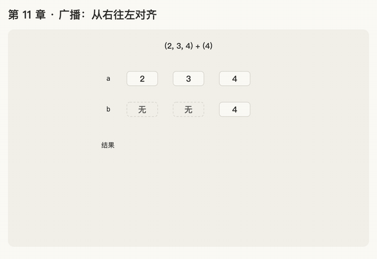

第 11 章 · 形状与广播：从右往左对齐，1 可以拉伸
本章回答：两个形状不一样的张量为什么能直接相加？什么时候会报 "size must match"？多头注意力里把 (B, T, D) 变成 (B, H, T, d) 的那几步变形，各自在干什么？
讲解日期：2026-11-14 · 上一章：第 10 章 保存与加载 · 下一章：第 12 章 索引与散射
对应原文：00-overview.md §4.2；官方文档 Broadcasting semantics（〔在线〕docs.pytorch.org/docs/stable/notes/broadcasting.html）；einops 文档（〔在线〕einops.rocks）；Transformer 讲义 第 13 章 多头；本章输出在本机 torch 2.15.0 上跑过本章缩写：B = batch（批大小）；T = time / tokens（序列长度）；D = d_model（模型维度）；H = heads（头数）；d = 每个头的维度 = D / H；全部缩写见 附录 · 缩写与术语表
讲解
第一步：广播规则——从右往左对齐（2026-11-14）
类比：排队对号入座。 两队人从最右边开始一一对齐。每一对要么人数一样，要么有一边只有 1 个人（他可以"分身"陪对面所有人），要么有一边已经没人了（当成 1）。
规则写成三条：
- 两个形状从最后一维开始往前对齐；
- 每一对维度：相等，或者其中一个是 1，或者其中一个不存在；
- 结果的每一维取两者中大的那个。
数字演示：
| a 的形状 | b 的形状 | 从右对齐 | 结果 |
|---|---|---|---|
| (2, 3, 4) | (4,) | 4 对 4 ✓；3 对"无" ✓；2 对"无" ✓ | (2, 3, 4) |
| (2, 3, 4) | (3, 1) | 4 对 1 ✓；3 对 3 ✓；2 对"无" ✓ | (2, 3, 4) |
| (2, 3, 4) | (3,) | 4 对 3 ✗ | 报错 |
| (3, 1) | (2,) | 1 对 2 ✓；3 对"无" ✓ | (3, 2) |
最后一行实测：
torch.tensor([[1.], [2.], [3.]]) + torch.tensor([10., 20.])
# tensor([[11., 21.],
# [12., 22.],
# [13., 23.]])
列向量 (3, 1) 往右"拉伸"成 2 列；行向量 (2,) 往下拉伸成 3 行，再逐个相加，得到 3 × 2 的"加法表"。
报错长这样：The size of tensor a (4) must match the size of tensor b (3) at non-singleton dimension 2——"第 2 维上 4 和 3 对不上，而且都不是 1"。
广播不复制数据：拉伸靠的是第 2 章的 stride = 0。
一句话：从右往左对齐，每对相等或有一个是 1 或不存在；1 会被拉伸，靠 stride 0 不复制。
第二步：最常见的坑——偏偏对上了，但对错了维（2026-11-14）
广播报错不可怕，可怕的是不报错但算错。
例：每个样本（行）减去自己的均值。x 形状 (B, D)：
x - x.mean(dim=1) # mean 是 (B,)，从右对齐会去对 D 那一维！
x - x.mean(dim=1, keepdim=True) # mean 是 (B, 1)，对的
第一行在 B ≠ D 时会报错还好；如果恰好 B = D（比如都是 64），不报错，结果是错的：每一列减的是"某一行"的均值。
防法：
- 规约时用
keepdim=True，维度位置不变； - 写注释或用 jaxtyping 标形状（仓库约定
Float[Tensor, "batch d_model"]）； - 测试时故意用互不相同的维度大小（B = 3、D = 5），让错误的广播当场报错。
一句话：广播最怕"恰好对上"；规约用 keepdim，测试用互不相等的维度。
第三步：变形四件套（2026-11-14）
| 操作 | 做什么 | 例子 |
|---|---|---|
view / reshape |
改形状，元素总数不变，按行优先顺序重新切 | (2, 6) → (2, 2, 3) |
transpose(a, b) / permute(...) |
换维度的顺序 | (B, T, H, d) → (B, H, T, d) |
unsqueeze(i) / squeeze(i) |
插入 / 去掉一个长度 1 的维 | (D,) → (1, D)，为了广播 |
expand / repeat |
广播式假复制 / 真复制（第 2 章） | (1, D) → (B, D) |
数字演示：多头注意力的拆头（Transformer 第 13 章）。q 形状 (B=2, T=5, D=8)，拆成 H=2 个头，每头 d=4：
q.view(2, 5, 2, 4) # (B, T, H, d)：把最后的 8 切成 2 段 × 4
.transpose(1, 2) # (B, H, T, d)：把"头"挪到前面，每个头单独做 attention
# torch.Size([2, 2, 5, 4])
为什么先 view 再 transpose，不能直接 view(2, 2, 5, 4)？因为内存里 8 个数是"同一个 token 的 8 个维度"挨着放的，直接 view 会把不同 token 的数切到一个头里。先在最后一维上切（不跨 token），再换维度顺序才对。
transpose 之后不连续（第 2 章），stride 是 (40, 4, 8, 1)。之后如果要 view 回 (B, T, D)，得先 .transpose(1, 2).contiguous() 或用 reshape。
一句话：view 只能在相邻维度间切分合并，换顺序用 transpose / permute；拆头要先切最后一维再换位置。
第四步：einops——把形状写成字
上面两步用 einops（Einstein-inspired notation for operations：爱因斯坦式记号的张量操作库）写成一行，形状一目了然：
from einops import rearrange
rearrange(q, "b t (h d) -> b h t d", h=2) # 拆头，结果同上
rearrange(o, "b h t d -> b t (h d)") # 合头
括号 (h d) 表示"这一维是 h 和 d 合在一起的"；箭头两边字母一样多，没写错就不会出错。仓库约定张量运算优先用 einops。einops.repeat / reduce 对应广播复制和规约。
一句话：einops 把变形写成"字母 → 字母"，括号表示合并，读代码就是读形状。
动画演示：广播对齐

可交互版：animations/11-broadcast.html。下拉选四组形状。
怎么看：
- 两个形状右对齐排成两行，从最右一对开始逐对检查，打 ✓ 或 ✗；
- 是 1 的那一维画出"拉伸"箭头；
- 最后一组 (3, 1) + (2,) 展开成格子，看 3 × 2 的加法表怎么来的。
练习与作答记录
题 1：下面能广播吗？能的话结果形状是什么？(a) (5, 1, 4) + (3, 4)；(b) (8, 3) + (8,)；(c) (2, 1) + (1, 7)。
作答：（待作答）
题 2：x 形状 (64, 64)，同事写 x - x.max(dim=1).values 想让每行减去自己那行的最大值。会报错吗？结果对吗？怎么改？
作答：（待作答）
题 3：k 形状 (B=4, T=10, D=12)，拆成 H=3 个头。写出拆头的 view 和 transpose（或一行 einops），结果形状是什么？
作答：（待作答）
口诀
广播从右往左对，相等或者有一个 1；1 会拉伸不复制；
恰好对上最危险，规约记得 keepdim；
拆头先切最后维，再用 transpose 换位置；einops 读代码就是读形状。
本章复习卡片
- P34（广播三条规则；(3, 1) + (2,) → (3, 2) 加法表；报错信息怎么读）
- P35（广播陷阱：B = D 时
x - x.mean(1)不报错但错；keepdim=True） - P36（拆头：view(B, T, H, d).transpose(1, 2)；为什么不能直接 view 成 (B, H, T, d)；einops 写法）
附录 · 延伸阅读
推荐阅读
| 读什么 | 读哪里 | 读它为了什么 |
|---|---|---|
| ★ 官方文档 Broadcasting semantics | 全文（〔在线〕） | 规则原文和 in-place 广播的限制 |
| ★ Tensor-Puzzles | 全部 21 题（〔在线〕github.com/srush/Tensor-Puzzles） | 只用广播写 outer、diag、cumsum 等，最好的广播练习 |
| einops 教程 | Part 1（〔在线〕einops.rocks） | rearrange / reduce / repeat |
| Transformer 讲义 | 第 13 章 多头 | 拆头的数学含义 |
数学原理
- 广播的形式化：形状右对齐后，结果第 \(k\) 维 \(= \max(a_k, b_k)\)，要求 \(a_k = b_k\) 或 \(\min(a_k, b_k) = 1\)。
- 外积：列向量 (n, 1) + 行向量 (m,) 广播成 (n, m)，即 \(C_{ij} = a_i + b_j\)；把 + 换成 × 就是外积 \(a b^\top\)。
公式清单
| 写法 | 意思 |
|---|---|
x.sum(dim, keepdim=True) |
规约后保留维度，方便广播回去 |
x.view(B, T, H, d).transpose(1, 2) |
拆头 |
rearrange(x, "b t (h d) -> b h t d", h=H) |
einops 拆头 |
x.unsqueeze(-1) / x[..., None] |
加一维 |
代码对照：把本章的数字用代码算一遍
用 torch 把讲义里的数字跑一遍。代码在仓库本地
pytorch-deep-dive/solutions/chapter-code/ch11_shape_broadcast.py，配套测试tests/test_ch07_15.py；同一章的 notebook：notebooks/ch11_shape_broadcast.ipynb（讲解和代码放在一起，一格一格边读边跑）。Mac 上直接能跑，不需要 GPU：
bash cd pytorch-deep-dive/solutions/chapter-code uv run python ch11_shape_broadcast.py # 一步一步打印 uv run pytest tests/test_ch07_15.py
讲义 ↔ 代码：
| 讲义 | 公式 / 说法 | 写法 | 跑出来 |
|---|---|---|---|
| 第一步 广播规则 | 从右对齐 | broadcast_shape(a, b) |
四组：三组成功、(2,3,4)+(3,) 报错 |
| 第一步 加法表 | (3, 1) + (2,) | addition_table() |
[[11, 21], [12, 22], [13, 23]] |
| 第二步 陷阱 | B = D 时不报错 | keepdim_trap() |
(False, True) |
| 第三、四步 拆头 | view + transpose | split_heads() |
(2, 2, 5, 4)、stride (40, 4, 8, 1)、与 einops 一致 |
关键几行：
x - x.mean(dim=1, keepdim=True) # 每行减自己的均值
q.view(B, T, H, D // H).transpose(1, 2)
rearrange(q, "b t (h d) -> b h t d", h=H)
代码里才看得到的 2 件事：
- 错误的广播在方阵上不报错：
keepdim_trap故意用 3 × 3，错的结果照样算出来。 - 拆头后 stride 是 (40, 4, 8, 1)：第 1、2 维的 stride 不递减，就是不连续。
自己改一改（不影响练习答案）：
broadcast_shape((5, 1, 4), (1, 3, 1))，先猜再跑。- 把
keepdim_trap(4)改成非方阵（比如 3 × 4），看会不会报错。